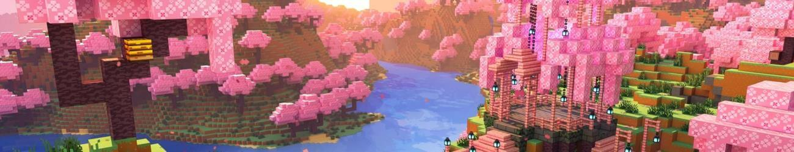
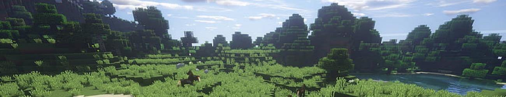
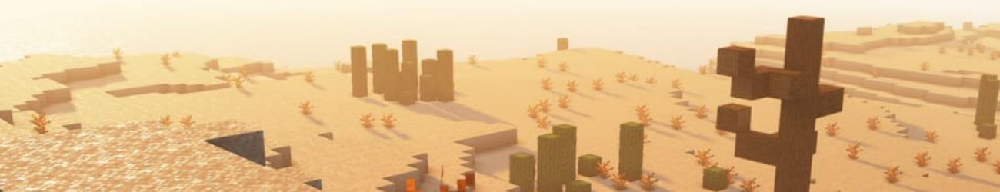
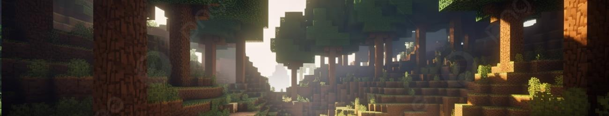

biomas
CHERRY BLOSSOM
Los cerezales son praderas con hierba alta y, además de los tradicionales dientes de león y amapolas, hay pétalos rosas. La principal característica ambiental del cerezal son los cerezos identificados por sus llamativas hojas rosas. Sus hojas sueltan partículas de pétalos. Los cerezos pueden generar lo suficientemente densos como para crear una cubierta de hojas. El bioma del cerezal es bueno para un mundo en modo supervivencia, ya que la escasez de árboles puede ayudar al jugador a no perderse mientras recoge recursos únicos.
llanura
La llanura está cubierta de hierba y en su mayoría planas. Muchos de los bloques de césped están cubiertos de hierba o hierba alta. El árbol de roble se genera a veces; 1⁄3 son grandes. En raras ocasiones, estos árboles tienen abejas y colmenas. En algunos parches de llanuras crecen varios colores de tulipaness y estos parches, junto con los bosques florales, son los únicos lugares donde los tulipaness generan. Las margaritas, acianos y azure bluets se generan esporádicamente dentro de las llanuras. Los girasoles se encuentran en la variación de girasol. Las aldeas de las llanuras usan tablones de roble y troncos. Los puestos de saqueadores también se generan, pero son aún más raros. Los caballos se generan en biomas de llanuras. En Bedrock Edition, este es el único bioma donde los burros pueden generarse.
desierto
Este bioma son unos de lo más extensos del minecraft,algunos desiertos albergan gran cantidad de espacio. Obtuvieron mayor dificultad para poder encontrarlos. Este bioma es seco-árido no llueve ni menos cae nieve, es un terreno llano con algunas mesetas cubiertas de arena. La única vegetación que tiene es el cactus y el arbusto muerto, no hay árboles.
bosques
Los biomas de bosque son comunes, floridos y densamente arbolados con robles y abedules. Las convalarias, las lilas, los rosales y las peonías se encuentran junto a los habituales dientes de león y amapolas. Los lobos aparecen en los bosques, por lo que éste es el único bioma, aparte de las taigas, en el que los lobos pueden aparecer. Los bosques son uno de los biomas preferidos para empezar un mundo de supervivencia, ya que sirven para obtener abundantes cantidades de madera, hierba y flores, agua y criaturas pasivas, y no tienen muchos peligros aparte de las habituales criaturas hostiles. Los lobos domesticados pueden ayudar a luchar contra las criaturas hostiles, lo que los hace especialmente útiles para cuando los jugadores carecen de recursos para la armadura. La densidad de los árboles, sin embargo, puede obstruir la visión y hacer que el jugador se pierda rápidamente; es posible que haya lagos de lava a nivel de superficie, aunque son raros, y provocan incendios forestales cuando están cerca de los árboles.